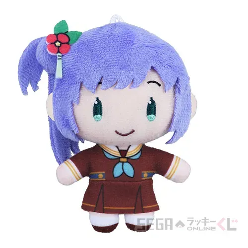
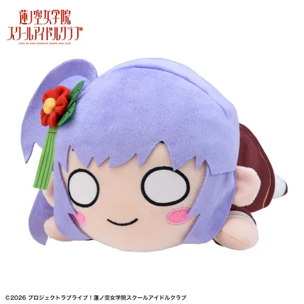
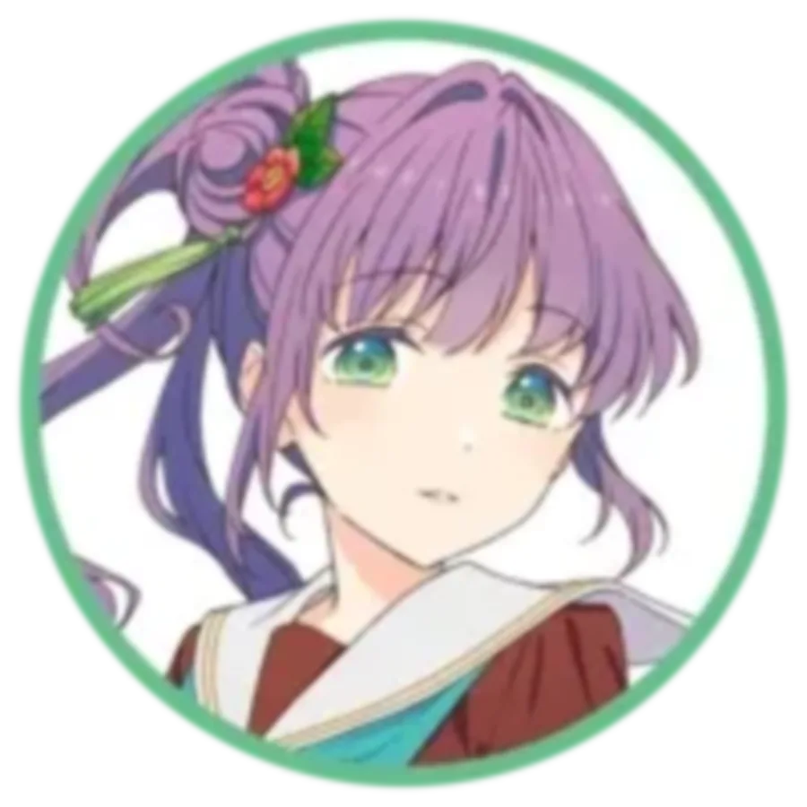
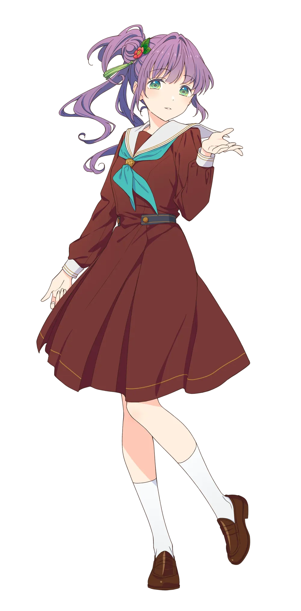

음악가 집안의 영애로 어려서부터 악기를 다뤄 왔지만 고등학교에 입학하면서 오래전부터 동경해 왔던 스쿨 아이돌을 하기 위해 음악 활동을 접었다. 처음에는 가족들도 반대했지만 지금은 응원받고 있다고 한다. 스쿨 아이돌 클럽의 부장을 겸하고 있고 러브 라이브 우승을 목표로 활동하고 있다. 홍차를 좋아하고 홍차에 어울리는 과자를 잘 만든다.
2. 상세
2.1. 자기 소개
자기 소개 영상 #1 (23.02.10 업로드)
하스노소라 여학원 2학년. 문무양도하고 미목수려하다.
학원에서 누구나 인정하는 존재지만 딱히 그것을 자랑하지 않는 우등생이다.
음악가 집안에서 태어나 어릴 적부터 다양한 것을 배워왔으며 어떤 일에도 노력을 아끼지 않는다. 기계에 약하지만 본인은 능숙해지는 중이라고 우긴다.
자기 소개 영상 #2 (23.12.10 업로드)
자기 소개 영상 #3 (24.04.13 업로드)
하스노소라 여학원의 3학년. 문무양도, 미목수려.
음악 집안에서 태어나, 어렸을 때부터 여러 가지를 배우고 있는 재녀.
스쿨 아이돌 클럽의 부장으로서, 다함께 「러브 라이브!」에 우승하는 것을 목표로 하고 있다. 기계가 서툴었는데, 최근은...?
보라색 머리카락을 다소 난해한 방법으로 오른쪽으로 묶은 사이드 테일을 하고 있다. 똥머리로 묶기 전에 머리카락의 일부를 아래로 늘어트리고 묶은 끝 부분을 위로 뺀 것으로 추정. 또한 묶은 머리에 빨간색 동백꽃과 초록색 술이 달린 머리장식을 단다. 특이하게도 코즈에의 성우가 이 머리를 따라 할 때는 머리카락에 컬을 넣는다.
프로젝트 초창기에는 성우도 이 머리를 따라 했지만 어느 시점부터 머리장식만 달고 나온다. 아무래도 헤어 스타일이 워낙 독특하다 보니 시간상의 문제였을 것으로 추정된다.
신장이 167cm로, 프로필 발표 당시 니지동의 아사카 카린과 같은 신장으로써 시리즈 공동 1위는 물론 클럽 내 신장 1위로 등극...할 뻔했으나 곧 이어 소개된 같은 클럽의 유기리 츠즈리가 171cm의 장신이라 순식간에 콩라인으로 밀려났다.[7][8] 그래도 일본 여성의 평균 키보다는 큰 장신으로 분류된다.
같은 유닛의 후배들처럼 글래머한 체형을 가지고 있다.
2.3. 보컬 스타일
러브 라이브 우승을 목표로 하는 베테랑 스쿨 아이돌에 부장이라는 설정답게 가창력이 뛰어나다. 성우의 본래 음성 톤인 미성으로 주로 노래하지만 필요할 때는 가성도 능수능란하게 잘 활용하며 본연의 톤과는 동떨어진 저음까지도 소화할 수 있다. 가창력이 좋을 뿐만 아니라 기교도 좋아서 잘 다듬어진 보컬이라는 인상이 잘 드러난다. 라이브에서 춤을 추면서 노래할 때도 가창력이 잘 유지되는 것도 강점이다.
3. 효빈광역시와의 관계 (성지순례 유니버스)
🍵 탄성군 정근면 사촌리의 '을종(乙宗)마을'
"우아하게, 그리고 아름답게. 당신의 마음을 치유해 드립니다."
※ 효빈광역시 탄성군의 맑은 공기와 코즈에식 멘탈 케어가 결합된 전설의 요양 시설.
3.1. 탄성군 정근면 사촌리의 '을종(乙宗)마을'
효빈광역시 탄성군 정근면 사촌리 산자락에 자리 잡은 효빈광역시사회서비스원 소속 '을종마을'은 서브컬처 팬들 사이에서 성지로 통한다. 이 시설의 이름인 '을종(乙宗)'이 오토무네 코즈에의 한자 성씨와 100% 동일하기 때문이다.
시설명
운영주체
위치
시설장
연면적 / 정원
비고
효빈광역시사회서비스원 을종(乙宗)마을
재단법인 효빈광역시사회서비스원
탄성군 정근면 사촌리 832
김대환
5,800㎡ / 250명
이름만 들으면 관공서 행정 용어(갑종/을종) 같지만, 한자는 유서 깊은 비밀 문파 느낌이 물씬 풍기는 '을종(乙宗)'이다.
산골짜기 맑은 공기 속에서 환자들에게 각 잡힌 전통 다도를 가르치며 멘탈에 우아함을 주입한다. 코즈에 감성으로, 시설장이 애착 인형 마냥 젊은 환자들을 끌어안고 다독이며 본인의 애정결핍을 먼저 채운다는 게 학계의 정설.(...)
이름의 유사성과 코즈에 특유의 '아가씨', '다도', '헌신적 돌봄(키잡?)' 기믹이 절묘하게 어우러져, 팬들은 이곳을 '코즈에 선배의 힐링 캠프'라 부르며 열광한다. 효빈시청은 이 인기를 의식해 오토무네 코즈에를 비공식 '탄성군 명예주민' 및 '을종마을 명예 촌장'으로 위촉하는 등 사심 섞인 홍보를 이어가고 있다.
1화부터 등장한다. 103기가 하스노소라 여학원에 입학한 지 며칠 후, 학교의 한 스테이지에서[9] 라이브 공연을 펼친다. 이 공연을 우연히 보게 된 카호가 첫눈에 빠져들게 되고, 이를 코즈에가 눈치채고 눈여겨보는 듯한 묘사가 나온다. 공연이 끝난 후 여운을 떨쳐버리지 못하는 카호에게 접근하여 함께 스쿨 아이돌을 해보지 않겠냐며 제안한다. 이때 묘사가 압권인데 카호에게 돌직구로 반했다고 한다... 물론 이 말은 스쿨아이돌에 재능이 있어 보인다는 뜻이지만 누가 그걸 그렇게 말하나요... 또 코즈에의 소꿉친구라는 설정의 코믹스 오리지널 캐릭터인 스미나가 등장한다.
코즈에 소개 방송 중 카호가 아침 연습을 빼먹은 것을 지적하며 끝나자마자 근력운동을 하러 가자고 압박하기도 한다.
연습하러 가기 싫어서 꾸물거리는 카호를 친히 찾아내 상단의 이미지처럼 옷깃 뒷덜미를 잡고 연습장으로 끌고 가는 장면이 있다. 카호의 절망하는 얼굴은 밈으로 등극했다. [#][번역]
기계치 속성도 네타로 자주 활용된다. 상술한 괴력 네타와 합쳐져 기계를 다루려다가 결국 힘으로 해결하는 식의 창작도 있다. 2023년 5월 13일 With×MEETS에서 방송을 마치려는데 카메라를 끄지 못해 곤란해하던 중 갑자기 방송이 종료되자 시청자들은 '부숴서 껐다'고 추정하기도(...). 코즈에가 출연하는 회차에 트러블이 생기거나 심지어 코즈에가 출연하지 않는 회차에 생겨도 '코즈에 선배가 또 장비 고장냈냐'는 시청자들의 댓글과 코즈에 얼굴 이모티콘이 쏟아진다.
반면 링크라나 스쿠스테 한정으로는 머신 마스터로 묘사된다. 유래는 루리노의 성우 캉캉이 링크라 하프 애니버서리 특방 때 스쿠스테 플레이에 썩 능숙하지 못한 모습을 보여주고 있을 때 코즈에의 성우 우이사마가[11]갑자기 기계치를 극복하고 오니로 돌변해 캉캉을 볶아 버리는 장면 때문이다. [자막 영상]
파생된 네타로 '기계 씨(機械さん; 키카이상)'가 있다. 코즈에가 기계를 상대하며 곤란한 상황에 처할 때마다 대상 기계에게 상냥하게 '기계 씨'라 부르며 원만한 해결을 부탁(...)하는 모습을 보이는 것이 정착한 것. 주된 대상은 코즈에의 휴대폰이지만, 스쿠코네 방송용 기기 등 기계 전반에 걸쳐 사용된다. 러브 라이브 시리즈의 방송이나 라이브에서 기기 트러블이 발생하면 '기계 씨'를 찾아대는 팬들의 모습을 볼 수 있다.
다만 기계 중에서도 악기로 취급할 수 있는 물건은 기계치의 영향을 받지 않는다고 한다. 실제로 키보드는 잘 다루기도 하고, DAW도 사용할 수 있고, 리듬게임도 악기의 일종으로 취급하여 고수의 실력을 뽐내고는 한다.[12]
카호에 대한 태도 때문인지 코토리, 요우, 아유무, 치사토, 시키의 뒤를 잇는 크싸레 밈이 있다. 나아가 한국 팬덤에서는 유우를 잇는 난봉꾼 하렘퀸 밈이 생기기도 했는데, 잡지 LoveLive! Days나 메인 스토리에서 코즈에가 츠즈리나 사야카, 루리노 등 다른 멤버들과 친밀함(?)을 과시하는 장면이 잊을 만하면 한 번씩 등장하기 때문이다.
범상치 않은 그림 실력으로 인해 화백 네타가 있다. 칠판에 웬 노란 해파리가 그려져 있나 했더니 토끼였고[13] 웬 동그란 갈색 덩어리가 있나 했더니 부엉이였다(...).[14] 한편 코즈에는 2023년 5월 15일 With×MEETS에서 "못하는 과목은 없지만 좋아하는 과목은 미술과 세계사"라고 밝혀 시청자들을 경악시켰다.
링크라가 코미케 104(2024년 8월 개최)에 참가했을 때는 아예 멤버 9명의 일러스트가 대문짝만하게 박힌 판촉물을 제작하기도 했으며 기념 월페이퍼 및 인게임 스티커가 배포되었다.
후술하듯이 게이머즈 이미지걸로 선정되면서 CM송인 Welcome!을 커버했는데, 코즈에 특유의 잔잔한 미성 보컬 + 후술한 컬트적인 그림체 + '~뇨'를 어미에 붙이는 말투 덕분에 코즈에가 데지코 복장을 한 팬아트가 우후죽순 나왔으며, '~뇨'체를 쓰는 것이 팬덤 사이에서 한동안 유행하기도 했다.
미끄메라 (인게임 스티커)
[사랑받는 딸] 카호
[사이보그 선배] 사야카
[GAHAKU] 코즈에
[큼] 츠즈리
[작음] 루리노
[러블리 윙크] 메구미
[이것도 전통] 긴코
[사야카의 눈을 한] 코스즈
[본체는 리본] 히메
코미케 104(2024년 여름) 부스 출장 기념으로 기어이 코즈에가 그린 사양의 인게임 스티커 및 모바일 배경화면이 배포되기에 이르렀다. 스티커의 이름은 코즈에가 작명한 것.
6. 커플링
같은 유닛 → 동기 → 기타 멤버 공식 넘버 순 정렬
오토무네 코즈에 x 히노시타 카호 (코즈카호/카호코즈)
같은 스리즈 부케의 멤버인 카호와 자주 엮이며 카호는 코즈에를 매우 존경한다. 카호가 막 입학했을 때 코즈에는 카호를 공주님 안기를 하며가 학교에 불만을 가지고 있다는 사실을 진작에 눈치챘지만 굳이 스쿨 아이돌 클럽의 매니저로 기용하면서 카호를 스쿨 아이돌로 유도하는 데 성공했다.
츠즈리의 말에 따르면 카호가 스쿨 아이돌이 되기 전부터 입만 열면 카호가 스쿨 아이돌이 되었으면 좋겠다고 말했다고 하며 일지에도 "카호를 위해 뭐든 해주고 싶다", "후배가 이렇게 귀여운 줄 몰랐다"라는 내용을 쓰기도 했음이 밝혀졌다.[15]포춘 무비의 막간에서는 자신을 카호의 운명의 사람으로 자칭하는 등 주로 코즈에가 카호에게 푹 빠진 모습을 볼 수 있다.
코즈에는 카호를 스쿨 아이돌로 키우는 데 진심이라 카호에게 오니 취급을 받거나 카호의 아이돌로서의 방향성을 자기 일처럼 고민하거나 하며 그 정도가 지나쳐서 팬들에게 키잡으로 의심받는 경우도 있다.
오토무네 코즈에 x 모모세 긴코 (코즈긴코/긴코코즈)
104기생 후배로 긴코의 할머니와 어린 시절에 인연을 맺은 것으로 밝혀진다. 어린 시절 긴코의 할머니가 직접 시치고산 전통 의상을 손수 만들어주었으며 코즈에는 긴코의 할머니를 스승님이라 부르며 존경하고 있다. 긴코와는 후배이자 자신과 인연이 있는 긴코의 할머니로 인해서 스승의 손녀이자 새로운 인연으로 거듭난다. 긴코는 처음에 코즈에를 봤을 때는 하스노소라 선배 정도로만 알았다가 할머니로부터 어린 코즈에에게 손수 시치고산 의상을 만들어주었다는 얘기를 듣고 놀라워한다.
오토무네 코즈에 x 히노시타 카호 x 모모세 긴코 (스리즈 부케)
오토무네 코즈에 x 유기리 츠즈리 (코즈츠즈/츠즈코즈)
동기이자 103기 입학 시점 기준으로 스쿨 아이돌 클럽에 남아 있던 유이했던 멤버.[16] 손이 많이 가는 츠즈리인지라 잔소리를 많이 하는 것으로 나오며, 역으로 코즈에가 츠즈리에게 허를 찔려 당황하는 장면도 종종 등장한다. 카호의 가입을 축하하는 자리에서 "입만 열면 매일같이 카호가 들어와 줬으면 좋겠다고 했으면서..."[17]라는 말에 급히 말을 돌리거나 "코즈는 그냥 기계에 약할 뿐이야"라는 말에 크게 당황하는 등...
오토무네 코즈에 x 후지시마 메구미 (코즈메구/메구코즈)
견원지간. 러브라이브를 목표로 자기단련과 면학에 힘쓰는 코즈에와 겉으로는 불성실한 것처럼 굴고 공부라면 학을 떼는 메구미는 완전히 상극이다. 코즈에가 메구미를 공부하라면서 훈계하고 메구미는 메구미대로 코즈에의 빈틈을 찌르며 반격하는 신경전을 스토리는 물론 생방마다 볼 수 있지만 코즈에가 부상을 입었을 때 메구미가 먼저 달려오는 등 티격태격해도 서로를 의지할 수 있는 동료로 인정하고 있다. 말하자면 악우 관계다.
102기 3인조. 103기 멤버들이 입학하기 1년 전부터 스쿨 아이돌 클럽에 소속되어 스쿨 아이돌 활동을 해 왔으며 일련의 사건들로 인해 메구미가 스쿨 아이돌 활동을 중단하는 바람에 사이가 어색해져 버렸다. 물론 메구미가 스쿨 아이돌 클럽에 복귀한 이후로는 그 시절이 무색하게 친하게 지내는 중이다. 보통 커플링들이 이름에서 명칭을 따 오는 것과는 달리 102기 조는 메구미가 링크라 스토리에서 언급한 '하스노(소라의) 대삼각'이라는 명칭으로 자주 불린다.
그와는 별개로, 102기 3인방이 다들 다른 방면으로 한 4차원 단단히 하는 문제아 멤버들인지라 나잇값 못하는 묘사가 심심하면 나온다. 주로 묘사되는 방식은 의욕 과다 헬창 코즈에, 어디로 튈지 모르는 초4차원 츠즈리에 바보왕 천연 메구미. 웃긴 것은 3명이 전부 '그래도 내가 다른 2명보다는 낫지'라고 생각한다는 것이다. 매체를 불문하고 대삼각이 등장해서 뒤집어놓을 때마다 작년에 3명을 동시에 홀로 케어해야 했던 사치가 얼마나 위대한 사람이었는지가 계속해서 재평가되는 중이며[18] 그와 동시에 선배들의 뒤치다꺼리를 해야 하는 1학년 멤버들(주로 사야카)이 동정을 산다.
코즈에의 유닛 후배들인 카호, 긴코가 워낙 천연스러운 성격들이다 보니 메구미와 츠즈리가 '코즈에는 사실 XX해주면 좋아한다'라는 식으로, 사실은 코즈에가 당황할 만한 일을 시켜서 맥이는(...) 장면도 종종 그려진다. 이런 악우스러운 면모도 대삼각 3인의 특징이라 볼 수 있다.
오토무네 코즈에 x 무라노 사야카 (코즈사야/사야코즈/하스노휴일)
둘 다 유닛에서 다른 멤버들을 챙겨주는 역할이다 보니 접점이 약간 있다. 주 패턴은 날뛰는 카호나 4차원력을 뿜어내는 츠즈리를 보며 서로를 위로해 주는 것이다. 가끔 서로의 파트너들을 어떻게 다뤄야 할지에 대해 조언도 주고받는 것으로 보인다. 특히 코즈에는 츠즈리와 1년이나 더 같이 붙어 있었기 때문에 사야카는 코즈에에게 도움을 많이 받는다.
2024년 2월에 셔플 유닛을 했을 때 함께 유닛으로 엮였다. 이때의 유닛명은 하스노휴일(蓮ノ休日).
오토무네 코즈에 x 오사와 루리노 (코즈루리/루리코즈)
어째서인지 루리노는 코즈에에게 언니라 불리고 싶어 하는 모습을 자주 보인다(...). 마이 시스터 코즈에 그런 루리노에게 의외로 쩔쩔매며 다 들어주는 코즈에가 소소한 웃음 포인트.
오토무네 코즈에 x 카치마치 코스즈 (코즈스즈/스즈코즈)
오토무네 코즈에 x 안요지 히메 (코즈히메/히메코즈)
7. 캐릭터 상품
큐루마루 봉제인형

이미지 없음
'">
세가 누이
쿠리팡

이미지 없음
'">
점보네소(30cm)
큐루마루 봉제인형: 2023년 9월 FURYU에서 발매되었다. UFO 캐쳐로 뽑을 수 있으며, 맹한 표정과 특유의 슈르함으로 폭발적인 인기를 기록, 전 세계적인 품귀현상을 일으켰다. 메루카리 등지에서 몇 만엔은 족히 한다. 2025년 12월에 104, 105기 큐루마루 발매와 함께 재판이 결정되었다.
세가 누이: 2024년 6월 세가 럭키 온라인 쿠지로 10cm 봉제인형이 발매되었다. 팬덤에서 통칭 '세가 누이'로 불린다. 2026년 8월 7일 재판되었다.
아가씨 캐릭터로, 시즈쿠나 렌과 유사하게 일본풍+서양풍 아가씨 컨셉이 섞여 있다.[19] 다만 존댓말 캐릭터는 아니며[20] 멤버들에게 반말을 사용한다. 동기들에게는 이름으로 부르고 후배들에게는 '~양'을 붙여 부른다. 일인칭은 '와타쿠시'.
아가씨 캐릭터지만 스쿨 아이돌 활동을 반대하는 기존 클리셰와 다르게 아예 스쿨 아이돌 클럽의 부장으로 활동하고 있다.
하스노소라의 작곡 담당이다. 미아 테일러처럼 가족들이 음악계에서 종사하고 있으며 본인도 예전부터 여러 악기들을 접해 왔다고 한다. 언급된 악기만 해도 기타, 피아노(키보드), 바이올린, 트럼펫, 플루트에 색소폰. 작곡을 할 때는 기타와 키보드를 주로 쓴다고 한다.
연습복
연습복은 본인의 이미지 컬러인 초록색과 머리색인 보라색이 어우러져 있다.
사용하는 휴대폰 케이스가 상당히 촌스러워서 네타거리가 되었다. 지갑형 케이스를 사용하는데 디자인이 영락없이 중장년층이 많이 사용하는 그것이다. 기계치라는 공식 설정을 살린 듯하다.
공식 넘버는 3번이지만 유닛끼리 뭉쳐서 소개되는 하스노소라의 특성상 사야카와 순서를 바꿔 2번으로 소개되는 경우가 많아 혼선을 준다. 공식 넘버로 3번을 사용했던 2학년 캐릭터로는 코토리, 3학년 캐릭터로는 카난이 있으며, 똑같이 진급이 있었던 치사토와는 2, 3학년 모두 겹친다.
생일이 6월 15일임이 밝혀지면서 그룹마다 한 명씩 있던 6월생의 계보가 이어졌다.[21][22]
스쿨 아이돌에 관심을 가지게 된 계기는 학교를 폐교의 위기에서 구한 스쿨 아이돌들에게 감명을 받아서. 직접적인 언급은 없지만 하스노소라의 스토리가 공개된 시점에서 해당되는 스쿨 아이돌은 μ’s밖에 없기 때문에 μ’s의 영향일 것으로 보인다.[23]
2023년 12월 9일, 10일 개최되는 이차원 페스 아이돌마스터★♥러브 라이브! 노래 대항전을 기념해 SD 일러스트가 공개되었다.
8.1. 프로필 일러스트
2학년 (103기)
3학년 (104기)
졸업 후 (극장판)

'">

'">
'">
103기 스탠딩 / 아이콘
104기 스탠딩 / 아이콘
극장판 스탠딩 / 아이콘
8.2. 생일 굿즈/일러스트
2024년 (2024.06.15.)
2026년 (2026.06.15.)
2024년 생일 기념 카드 일러스트 2024.06.15.
[1] 도쿄 소재.
[2] 리얼타임으로 흘러가는 하스노소라 프로젝트 특성상 매년 생일이 지나면서 나이가 바뀌었다.
[3] 극장판 프로필에서 추가.
[4] 극장판 프로필에서 추가.
[5] Link! Like! 러브 라이브!의 세계관에서만 전 멤버이며, 러브 라이브! flowers*-하스노소라 여학원 스쿨 아이돌 클럽-에서는 현역이다.
[6] 졸업 후 업로드되었다.
[7] 하스노소라 멤버 공개 전까지는 니지동의 아사카 카린(167cm)이 최장신이었으나 공개 이후로는 오토무네 코즈에와 동률이 된 것과 동시에 츠즈리에게 신장 1위 자리를 내주었다.
[8] 그 후에 170cm의 카츠라기 이즈미가 등장하며 콩라인도 아니게 되었다.
[9] 유기리 츠즈리와는 다른 장소. 링크라에서는 같은 장소이되 츠즈리와는 따로 공연했는데 코믹스에서는 아예 장소부터 다르다.
[10] 이것을 폭로할 뻔한 사람은 오사와 루리노.
[11] 우이사마는 하스노소라 캐스트 중에서는 물론이고 링크라 플레이어 전체 중에서도 최상위권의 플레이어로 추정된다.
[12] 공식 4컷 만화 104기 43화에서.
[13] 코즈에는 '잘 보면 꼬리까지 그려져 있다'며 자랑스러워했다(...).
[14] 시청자들이 채팅에서 '갈색 덩어리'의 정체가 뭔지 물어보자 카호가 시청자들에게 뭘로 보이냐며 되묻기까지 했다. 물론 코즈에를 매우 존경하는 카호의 입장에서는 놀릴 의도는 전혀 없이 단순히 물어본 것이다. 이에 대한 시청자 채팅이 가관인데 두더지, 제비에 수달부터 시작해서 밤(열매), 타코야키까지 나왔다.
[15] 이는 코즈에가 계속 카호를 스쿨 아이돌로 데려오고 싶다는 애기를 한 것을 유기리 츠즈리가 폭로하면서 밝혀졌다.
[16] 또 다른 동기인 후지시마 메구미는 활동 중단 상태였다.
[17] 카호의 가입 축하를 위한 자리인지라 카호도 옆에서 듣고 있었다.
[18] 사치가 은퇴한 이유가 3명을 케어하다가 도저히 못해먹겠어서 때려친 것이 아니냐는 류의 드립이 자주 보인다.
[19] 참고로 완전한 서양풍 아가씨 컨셉이었던 캐릭터로는 니시키노 마키, 오하라 마리 정도가 있으며 반대로 완전한 일본풍 아가씨는 소노다 우미, 쿠로사와 다이아, 미후네 시오리코를 꼽을 수 있다.


 하나미야 니나
하나미야 니나